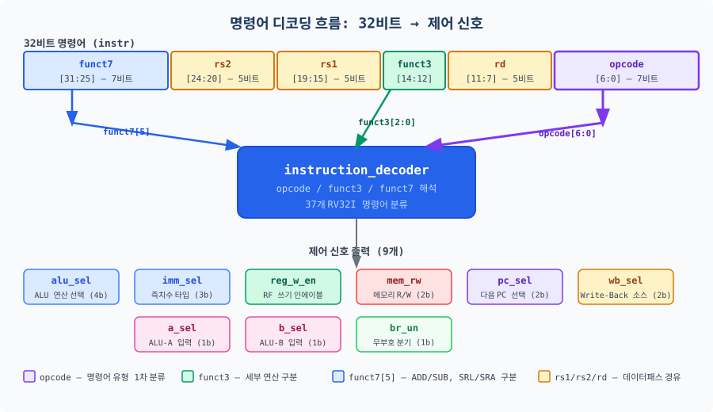

지금까지 CPU를 이루는 부품들을 하나씩 제작했습니다. 이 챕터에서는 그 부품들이 하나의 완전한 CPU가 됩니다.
명령어 디코더와 제어 신호를 설계하고, 이를 통해 RV32I 37개 명령어를 실행하는 단일 사이클 프로세서를 완성합니다.
챕터가 끝날 때, 여러분이 직접 만든 CPU 위에서 피보나치 수열 프로그램이 실행됩니다.
지금까지 만든 것, 그리고 앞으로 할 것
여러분은 이미 CPU의 핵심 부품들을 모두 만들었습니다. Ch04에서는 ALU(산술 논리 유닛, Arithmetic Logic Unit),
레지스터 파일(Register File), 즉치수 생성기(Immediate Generator)를 설계했고,
Ch05에서는 명령어 메모리(Instruction Memory)와 데이터 메모리(Data Memory)를 완성했습니다.
이 챕터에서 새로 배울 개념은 단 두 가지입니다: 명령어 디코더(Instruction Decoder)와
제어 신호(Control Signal). 나머지는 연결(wiring)입니다. 부품들을 올바른 순서로
올바르게 연결하면, 그것이 바로 CPU가 됩니다.
비유:
레고 세트를 생각해 보십시오. 각 블록은 이미 만들어져 있습니다. 설명서가 바로 제어 신호입니다.
"1번 블록의 왼쪽 돌출부를 2번 블록의 오른쪽 홈에 끼우시오"—이 지시 사항들이 없으면
아무리 좋은 블록이 있어도 집을 지을 수 없습니다. 제어 유닛은 CPU의 설명서 역할을 합니다.
이 챕터가 끝날 때, 여러분이 직접 설계한 CPU 위에서 피보나치 수열이 실행됩니다.
F(0)=0, F(1)=1, F(2)=1, …, F(11)=89까지, 여러분의 RISC-V 프로세서가 직접 계산합니다.
이것이 Part 2의 첫 번째 대성취(★★)입니다.
6.1 명령어 디코더 설계
6.1.1 명령어 필드와 디코딩 원리
RISC-V 32비트 명령어는 기능에 따라 여러 필드(field)로 나뉩니다. 디코더의 역할은 이 필드들을 읽어
"지금 이 명령어는 무엇을 하라는 것인가?"를 결정하는 것입니다.
핵심 필드는 세 가지입니다.
opcode [6:0] — 명령어 유형을 결정합니다. R 타입인지, Load인지, Branch인지 이 7비트만 보면 알 수 있습니다.
funct3 [14:12] — 같은 opcode 내에서 세부 연산을 구분합니다. ADD와 SUB는 같은 R 타입 opcode를 가지지만 funct3이 다릅니다.
funct7[5] (instr[30]) — funct3만으로 구분이 안 될 때 사용합니다. ADD(funct7[5]=0)와 SUB(funct7[5]=1), SRL과 SRA를 구분합니다.

그림 6.1: 명령어 디코딩 흐름 — 32비트 명령어의 각 필드가 어떤 제어 신호로 변환되는지 보여줍니다.
6.1.2 RV32I opcode 분류표
RV32I에는 37개의 명령어가 있습니다. 이들을 opcode 값에 따라 분류하면 다음과 같습니다.
디코더의 첫 번째 단계는 이 opcode를 case 문으로 분기하는 것입니다.
왜 비트를 섞어 놓았는가? 처음 보면 의도적으로 복잡하게 만든 것처럼 보입니다.
그러나 이는 하드웨어 복잡성을 낮추기 위한 의도적 설계입니다.
RISC-V ISA 스펙(Vol. I, 2.3절)에 따르면 이 설계에는 두 가지 핵심 목표가 있습니다.
부호 비트(instr[31])의 위치 통일: I/S/B/U/J 모든 타입에서
즉치수의 부호 비트(최상위 비트)는 항상 instr[31]에 위치합니다.
덕분에 부호 확장(sign extension) 회로를 하나만 공유할 수 있습니다.
만약 타입마다 부호 비트 위치가 다르면, 각 타입마다 별도의 부호 확장 회로가 필요했을 것입니다.
rs1/rs2 필드 위치 보존: B 타입 명령어의 인코딩에서
instr[19:15](rs1)와 instr[24:20](rs2) 필드는
R 타입, I 타입과 동일한 위치를 유지합니다.
디코더가 opcode를 보기 전에 미리 레지스터 주소를 읽기 시작하는
조기 레지스터 읽기(early register read) 최적화가 가능해집니다.
결론적으로, instr[7]이 imm[11]에 배치되는 이유는
그 자리에 rs2 필드(instr[24:20])와 funct7(instr[31:25])을
유지해야 하기 때문입니다. 즉치수의 일부 비트가 rs2/funct7 영역에서 밀려나
instr[7]이라는 빈 자리를 채우게 됩니다.
비트 재배열은 즉치수 생성기(Immediate Generator)가 담당하며,
디코더 자체의 복잡성은 전혀 증가하지 않습니다.
6.1.3 명령어 디코더 SystemVerilog 구현
디코더는 순수한 조합 논리(combinational logic)입니다. 클록이 없습니다.
명령어가 입력되면 즉시(동시에) 모든 제어 신호가 출력됩니다.
SystemVerilog에서는 always_comb 블록으로 구현합니다.
먼저 5개의 typedef enum을 정의합니다. 이 열거형은 제어 신호의 의미를 코드에서 명확하게 표현하기 위한 것입니다.
// ALU 연산 코드 (4비트 — 10가지 연산)
typedef enum logic [3:0] {
ALU_ADD = 4'b0000, // 덧셈
ALU_SUB = 4'b0001, // 뺄셈
ALU_AND = 4'b0010, // 비트 AND
ALU_OR = 4'b0011, // 비트 OR
ALU_XOR = 4'b0100, // 비트 XOR
ALU_SLL = 4'b0101, // 좌측 논리 시프트
ALU_SRL = 4'b0110, // 우측 논리 시프트
ALU_SRA = 4'b0111, // 우측 산술 시프트
ALU_SLT = 4'b1000, // 부호 있는 비교
ALU_SLTU = 4'b1001 // 부호 없는 비교
} alu_op_t;
// 즉치수 타입 (3비트)
typedef enum logic [2:0] {
IMM_I = 3'b000, // I 타입: instr[31:20]
IMM_S = 3'b001, // S 타입: {instr[31:25], instr[11:7]}
IMM_B = 3'b010, // B 타입: 분기 오프셋
IMM_U = 3'b011, // U 타입: 상위 20비트
IMM_J = 3'b100 // J 타입: 점프 오프셋
} imm_sel_t;
// Write-Back 소스 (2비트)
typedef enum logic [1:0] {
WB_ALU = 2'b00, // ALU 결과
WB_MEM = 2'b01, // 메모리 읽기 결과
WB_PC4 = 2'b10 // PC + 4 (JAL/JALR 복귀 주소)
} wb_sel_t;
// PC 소스 (2비트)
typedef enum logic [1:0] {
PC_PLUS4 = 2'b00, // 순차 실행
PC_BRANCH = 2'b01, // 분기/JAL 목표 주소
PC_JALR = 2'b10 // JALR 목표 주소
} pc_sel_t;
// 메모리 접근 (2비트)
typedef enum logic [1:0] {
MEM_NONE = 2'b00, // 메모리 접근 없음
MEM_READ = 2'b01, // Load 명령어
MEM_WRITE = 2'b10 // Store 명령어
} mem_rw_t;
다음은 디코더 모듈의 포트와 핵심 opcode case 문입니다. 기본값(default value)을 먼저 설정하고 각 opcode별로 재정의하는 방식은 래치(latch) 생성을 방지하는 표준적인 SystemVerilog 관용구입니다.
module instruction_decoder (
input logic [31:0] instr,
input logic br_eq,
input logic br_lt,
output alu_op_t alu_sel,
output imm_sel_t imm_sel,
output logic reg_w_en,
output mem_rw_t mem_rw,
output pc_sel_t pc_sel,
output wb_sel_t wb_sel,
output logic a_sel,
output logic b_sel,
output logic br_un,
output logic illegal_instr
);
logic [6:0] opcode;
logic [2:0] funct3;
logic [6:0] funct7;
assign opcode = instr[6:0];
assign funct3 = instr[14:12];
assign funct7 = instr[31:25];
// --- 분기 조건 판정 (조합 논리) ---
logic branch_taken;
always_comb begin
branch_taken = 1'b0;
if (opcode == 7'b1100011) begin
case (funct3)
3'b000: branch_taken = br_eq; // BEQ
3'b001: branch_taken = ~br_eq; // BNE
3'b100: branch_taken = br_lt; // BLT
3'b101: branch_taken = ~br_lt; // BGE
3'b110: branch_taken = br_lt; // BLTU
3'b111: branch_taken = ~br_lt; // BGEU
default: branch_taken = 1'b0;
endcase
end
end
// --- 메인 디코더: opcode 기반 제어 신호 생성 ---
always_comb begin
// 기본값 설정 (래치 방지 — synthesizable 관용구)
alu_sel = ALU_ADD; imm_sel = IMM_I; reg_w_en = 1'b0;
mem_rw = MEM_NONE; pc_sel = PC_PLUS4; wb_sel = WB_ALU;
a_sel = 1'b0; b_sel = 1'b0; br_un = 1'b0;
illegal_instr = 1'b0;
case (opcode)
7'b0110011: begin // R 타입
reg_w_en = 1'b1;
case (funct3)
3'b000: alu_sel = funct7[5] ? ALU_SUB : ALU_ADD;
3'b001: alu_sel = ALU_SLL;
3'b010: alu_sel = ALU_SLT;
3'b011: alu_sel = ALU_SLTU;
3'b100: alu_sel = ALU_XOR;
3'b101: alu_sel = funct7[5] ? ALU_SRA : ALU_SRL;
3'b110: alu_sel = ALU_OR;
3'b111: alu_sel = ALU_AND;
endcase
end
7'b0010011: begin // I-ALU 타입
reg_w_en = 1'b1; b_sel = 1'b1; imm_sel = IMM_I;
case (funct3)
3'b000: alu_sel = ALU_ADD; // ADDI
3'b001: alu_sel = ALU_SLL; // SLLI
3'b010: alu_sel = ALU_SLT; // SLTI
3'b011: alu_sel = ALU_SLTU; // SLTIU
3'b100: alu_sel = ALU_XOR; // XORI
3'b101: alu_sel = funct7[5] ? ALU_SRA : ALU_SRL;
3'b110: alu_sel = ALU_OR; // ORI
3'b111: alu_sel = ALU_AND; // ANDI
endcase
end
7'b0000011: begin // Load
reg_w_en = 1'b1; b_sel = 1'b1; imm_sel = IMM_I;
mem_rw = MEM_READ; wb_sel = WB_MEM;
end
7'b0100011: begin // Store
b_sel = 1'b1; imm_sel = IMM_S; mem_rw = MEM_WRITE;
end
7'b1100011: begin // Branch
a_sel = 1'b1; b_sel = 1'b1; imm_sel = IMM_B;
pc_sel = branch_taken ? PC_BRANCH : PC_PLUS4;
br_un = funct3[1];
end
7'b1101111: begin // JAL
reg_w_en = 1'b1; a_sel = 1'b1; b_sel = 1'b1;
imm_sel = IMM_J; pc_sel = PC_BRANCH; wb_sel = WB_PC4;
end
7'b1100111: begin // JALR
reg_w_en = 1'b1; b_sel = 1'b1; imm_sel = IMM_I;
pc_sel = PC_JALR; wb_sel = WB_PC4;
end
7'b0110111: begin // LUI
reg_w_en = 1'b1; b_sel = 1'b1; imm_sel = IMM_U;
end
7'b0010111: begin // AUIPC
reg_w_en = 1'b1; a_sel = 1'b1; b_sel = 1'b1; imm_sel = IMM_U;
end
7'b0001111: begin // FENCE → NOP 처리 (명시적 case)
// 아무 동작 없음 (기본값 유지)
end
7'b1110011: begin // ECALL/EBREAK → NOP 처리
// 최소 구현: 아무 동작 없음
end
default: begin
illegal_instr = 1'b1;
end
endcase
end
endmodule
6.2 제어 신호 정의
디코더가 출력하는 제어 신호(control signal)들은 데이터패스의 각 구성 요소가 이번 클록 사이클에
무엇을 해야 할지를 지시합니다. 교통 신호처럼, 데이터가 어느 길로 흘러야 하는지, 어디서 멈추어야 하는지,
어느 연산을 수행해야 하는지를 결정합니다.
6.2.1 제어 신호 목록과 역할
신호명
비트 폭
역할
alu_sel
4비트 (enum)
ALU가 수행할 연산 선택 (ADD, SUB, AND, …)
imm_sel
3비트 (enum)
즉치수 생성기의 출력 타입 선택 (I/S/B/U/J)
reg_w_en
1비트
1이면 레지스터 파일 rd에 쓰기 허용
mem_rw
2비트 (enum)
NONE/READ/WRITE — 데이터 메모리 접근 제어
pc_sel
2비트 (enum)
다음 PC 소스: PC+4 / 분기 목표 / JALR 목표
wb_sel
2비트 (enum)
Write-Back 소스: ALU 결과 / 메모리 데이터 / PC+4
a_sel
1비트
ALU A 입력: 0=rs1, 1=PC
b_sel
1비트
ALU B 입력: 0=rs2, 1=즉치수
br_un
1비트
분기 비교기 모드: 0=부호 있는 비교, 1=무부호 비교
그림 6.2: 9개 제어 신호와 데이터패스 제어 관계 — 파선은 제어 신호, 실선은 데이터 경로를 나타냅니다.
6.2.2 명령어 타입별 제어 신호 진리표
이 표는 암기 목록이 아닙니다. 총 9가지 명령어 그룹에 걸쳐 패턴은 세 가지뿐입니다:
RegWEn(레지스터에 쓰는가?), MemRW(메모리에 접근하는가?),
PCSel(PC를 분기하는가?). 나머지 신호들은 이 세 가지를 결정하고 나면
자연스럽게 따라옵니다.
지금은 전체 흐름을 이해하는 데 집중하십시오.
제어 신호 진리표는 순서대로 살펴보겠습니다. 외우려 하지 말고, 각 명령어가 무엇을 해야 하는지를
논리적으로 유도하십시오.
R 타입 (ADD, SUB, XOR, …)
R 타입은 두 레지스터를 읽어 ALU 연산 후 결과를 레지스터에 쓰는 가장 단순한 형태입니다.
메모리 접근이 없고, 즉치수도 사용하지 않습니다.
reg_w_en
mem_rw
wb_sel
a_sel
b_sel
imm_sel
pc_sel
alu_sel
1
NONE
ALU
rs1(0)
rs2(0)
X
PC+4
funct3/7 결정
I-ALU 타입 (ADDI, XORI, ANDI, …)
R 타입과 거의 같지만, ALU B 입력이 rs2 대신 즉치수(imm)입니다.
b_sel=1이 핵심 차이점입니다.
reg_w_en
mem_rw
wb_sel
a_sel
b_sel
imm_sel
pc_sel
alu_sel
1
NONE
ALU
rs1(0)
imm(1)
I
PC+4
funct3 결정
Load 타입 (LW, LB, LH, …)
주소를 ALU로 계산(rs1+imm)하고, 메모리를 읽어 레지스터에 씁니다.
Write-Back 소스가 ALU가 아닌 메모리(wb_sel=MEM)임에 주목하십시오.
reg_w_en
mem_rw
wb_sel
a_sel
b_sel
imm_sel
pc_sel
alu_sel
1
READ
MEM
rs1(0)
imm(1)
I
PC+4
ADD
Store 타입 (SW, SB, SH)
레지스터에서 메모리로 쓰는 명령어. 목적지 레지스터(rd)가 없으므로 reg_w_en=0입니다.
즉치수 타입이 S 타입(imm_sel=IMM_S)이라는 점도 중요합니다.
reg_w_en
mem_rw
wb_sel
a_sel
b_sel
imm_sel
pc_sel
alu_sel
0
WRITE
X
rs1(0)
imm(1)
S
PC+4
ADD
Branch 타입 (BEQ, BNE, BLT, …)
분기 명령어는 레지스터에 쓰지 않습니다(reg_w_en=0).
ALU는 분기 목표 주소(PC + imm)를 계산하므로 a_sel=PC(1)입니다.
분기 성립 여부에 따라 pc_sel이 결정됩니다.
reg_w_en
mem_rw
wb_sel
a_sel
b_sel
imm_sel
pc_sel
alu_sel
0
NONE
X
PC(1)
imm(1)
B
조건부
ADD
JAL / JALR
JAL은 점프 목표 주소를 PC+imm으로 계산합니다(a_sel=PC).
JALR은 rs1+imm으로 계산합니다(a_sel=rs1).
둘 다 복귀 주소(PC+4)를 rd에 저장하므로 wb_sel=WB_PC4입니다.
명령어
reg_w_en
a_sel
b_sel
imm_sel
pc_sel
wb_sel
JAL
1
PC(1)
imm(1)
J
BRANCH
PC+4
JALR
1
rs1(0)
imm(1)
I
JALR
PC+4
LUI / AUIPC
LUI는 상위 20비트 즉치수를 레지스터에 로드합니다. ALU에서 0+imm을 계산하는 방식으로 구현합니다.
AUIPC는 PC+imm을 계산하므로 a_sel=PC(1)입니다.
LUI에서 a_sel=0(rs1 선택)으로 구현하는 근거는 RISC-V ISA 스펙(Vol. I, 2.4절)에 있습니다.
LUI 명령어의 rs1 필드는 don't-care로 정의됩니다.
표준 어셈블러(GAS, LLVM)는 이 필드를 항상 x0(5'b00000)으로 채웁니다.
레지스터 파일은 rs1_addr == 5'd0일 때 항상 32'h0을 반환하므로,
a_sel=0 시 ALU A 입력은 항상 0이 됩니다.
이 구현은 어셈블러가 RISC-V 스펙을 준수함을 전제로 합니다.
명령어
reg_w_en
a_sel
b_sel
imm_sel
alu_sel
wb_sel
LUI
1
rs1(0, x0)
imm(1)
U
ADD
ALU
AUIPC
1
PC(1)
imm(1)
U
ADD
ALU
6.3 단일 사이클 데이터패스 통합
6.3.1 Top-Level 모듈 구조
6.1절에서 만든 instruction_decoder와 분기 비교기(branch_comparator)를
하나의 모듈로 묶은 것이 control_unit입니다.
branch_comparator는 rs1_data와 rs2_data를 입력받아
br_eq(같음)와 br_lt(작음) 신호를 출력하는 조합 논리 모듈입니다.
control_unit은 이 두 신호를 instruction_decoder에 전달하여
분기 조건을 판정합니다.
top-level 코드에서 instruction_decoder 대신 control_unit이
인스턴스화되는 이유가 바로 여기에 있습니다.
control_unit의 전체 코드는 전체 소스 코드 섹션의 ch06_control_unit.sv를 참조하십시오.
단일 사이클 프로세서의 최상위 모듈 rv32i_single_cycle_top은
모든 서브모듈을 포함합니다. 계층 구조는 다음과 같습니다.
그림 6.3: 완성된 단일 사이클 데이터패스 — 실선은 데이터 경로, 파선은 제어 신호입니다.
이 다이어그램을 처음 보면 복잡해 보일 수 있습니다.
다음 순서로 한 경로씩 따라가십시오:
① PC→IMEM(명령어 인출 경로),
② IMEM→제어유닛→각 모듈(제어 신호 경로, 파선),
③ RF→ALU→MUX(산술 연산 경로),
④ ALU→DMEM→WB MUX→RF(Load 명령어 경로).
네 경로를 모두 이해하면 단일 사이클 CPU의 전체 동작이 보입니다.
6.3.2 MUX 연결: 세 곳의 선택 지점
데이터패스에는 세 곳의 멀티플렉서(MUX)가 있습니다. 이 MUX들은 제어 신호에 따라 데이터 경로를 결정합니다.
ALU-A MUX: a_sel=0이면 rs1_data, a_sel=1이면 PC
ALU-B MUX: b_sel=0이면 rs2_data, b_sel=1이면 즉치수(imm)
WB MUX: wb_sel=WB_ALU이면 ALU 결과, WB_MEM이면 메모리 데이터, WB_PC4이면 PC+4
// ALU 입력 MUX (assign 문으로 간결하게 구현)
assign alu_a = a_sel ? pc : rs1_data;
assign alu_b = b_sel ? imm : rs2_data;
// Write-Back MUX
always_comb begin
case (wb_sel)
WB_ALU: rd_data = alu_result;
WB_MEM: rd_data = dmem_rdata_ext; // 부호/무부호 확장 후
WB_PC4: rd_data = pc_plus4;
default: rd_data = alu_result;
endcase
end
6.3.3 Top-Level 전체 구현
아래는 단일 사이클 프로세서의 top-level 모듈 핵심 부분입니다.
PC 레지스터, 서브모듈 인스턴스, MUX, 로드 데이터 확장까지 포함합니다.
코드가 길어 보이지만, 이 코드에서 실제로 새로 작성해야 하는 논리는 세 부분뿐입니다:
① PC 레지스터와 다음 PC MUX,
② ALU 입력 MUX 2개(A/B),
③ Write-Back MUX와 로드 데이터 확장 로직.
나머지는 Ch04~Ch05 모듈의 포트 연결(instantiation)입니다.
신호 선언 블록은 이후 각 서브모듈 연결 과정에서 의미가 드러납니다.
이 순간을 기억하십시오.
지금 여러분이 시뮬레이터의 실행 버튼을 누르면, 여러분이 직접 설계한 CPU가
처음으로 실제 프로그램을 실행합니다. 파형 창에 PC가 0x00000000에서 시작하여
명령어를 하나씩 실행하는 모습, 레지스터 값이 피보나치 수열에 따라 변화하는 모습,
그리고 메모리에 값이 차례로 저장되는 모습을 확인하게 됩니다.
시뮬레이션을 실행하면 콘솔에 다음과 같은 출력이 나타납니다.
F(0)부터 F(11)까지 모든 값에 [PASS]가 표시되면 성공입니다.
// 예상 시뮬레이션 출력 (VCS/Vivado 시뮬레이터)
// ==================================================
// RV32I 단일 사이클 프로세서 통합 테스트
// 테스트 프로그램: 피보나치 수열 (F(0)~F(11))
// ==================================================
// [50] 리셋 해제, 프로그램 실행 시작
// --- 실행 완료: 레지스터 상태 확인 ---
// x10 (a0) = 55 (기대값: 55)
// x11 (a1) = 89 (기대값: 89)
// --- 데이터 메모리 확인 (0x1000~) ---
// F(0) = 0 [PASS]
// F(1) = 1 [PASS]
// F(2) = 1 [PASS]
// F(3) = 2 [PASS]
// F(4) = 3 [PASS]
// F(5) = 5 [PASS]
// F(6) = 8 [PASS]
// F(7) = 13 [PASS]
// F(8) = 21 [PASS]
// F(9) = 34 [PASS]
// F(10) = 55 [PASS]
// F(11) = 89 [PASS]
모든 테스트가 PASS라면, 이 순간을 잠시 음미하십시오. [PASS] 메시지 12개가 뜨는 이 화면은
Ch04부터 시작된 여정의 완성입니다. 여러분은 37개 명령어를 이해하고,
각 명령어에 필요한 제어 신호를 설계하고, 5개 모듈을 하나의 CPU로 연결하여,
실제 프로그램이 올바르게 실행되는 것을 검증했습니다.
아직 파이프라인도 없고 캐시도 없습니다 — 하지만 이것이 모든 현대 프로세서의 출발점입니다.
ALU, 레지스터 파일, 메모리, 제어 유닛이 모두 하나로 동작하는 것을 직접 확인한 것입니다.
이 성취는 이어지는 멀티사이클(Ch07)과 파이프라인(Ch08~Ch12) 설계의 완전한 토대가 됩니다.
만약 파형이 예상과 다르다면, 당황하지 마십시오.
제어 신호 오류는 경험 있는 설계자도 자주 범하는 실수입니다.
파이프라인 CPU를 설계하는 산업 현장에서도 제어 로직 버그는 가장 흔한 오류 유형 중 하나입니다.
PC 값, instr 신호, 제어 신호 파형을 순서대로 확인하면서 어느 명령어에서 오류가 발생했는지 찾아보십시오.
6.5 Basys 3 합성 및 타이밍 분석
시뮬레이션에서 동작을 검증했다면, 이제 실제 FPGA에 합성(synthesis)하여 타이밍을 확인합니다.
합성은 RTL 코드를 FPGA의 물리적 자원(LUT, 플립플롭)으로 변환하는 과정입니다.
Basys 3 보드의 Xilinx Artix-7 FPGA를 대상으로 합성합니다.
6.5.1 Vivado 합성 절차
Vivado에서 단일 사이클 프로세서를 합성하는 절차는 다음과 같습니다.
// Vivado TCL 콘솔에서 합성 실행 (단계별)
// 1. 프로젝트 생성 후 모든 .sv 파일 추가
// 2. Top Module을 rv32i_single_cycle_top으로 설정
// 3. 제약 파일(.xdc) 작성 — 클록 주파수 지정
// Basys 3 마스터 제약 파일 (일부)
// create_clock -period 10.000 -name sys_clk [get_ports clk]
// (Basys 3의 기본 클록: 100MHz = 10ns 주기)
// 합성 실행
// Flow → Run Synthesis
// 합성 완료 후: Reports → Timing → Report Timing Summary
6.5.2 타이밍 용어: WNS와 TNS
합성 후 타이밍 리포트에서 가장 먼저 확인해야 할 두 가지 수치가 있습니다.
슬랙(Slack, 여유 시간)은 타이밍 여유를 나타냅니다.
계산식은 다음과 같습니다:
슬랙 = 요구 도착 시간(Required Arrival Time) − 실제 도착 시간(Actual Arrival Time)
지하철 비유로 이해하면 쉽습니다. 열차가 오후 3시에 출발한다고 합시다(요구 도착 시간).
내가 2시 58분에 도착하면 슬랙 = +2분(여유 있음).
3시 2분에 도착하면 슬랙 = −2분(타이밍 위반).
CPU에서도 클록 엣지 전에 데이터가 안정적으로 도착해야 합니다.
용어
의미
판정 기준
WNS (Worst Negative Slack)
모든 타이밍 경로 중 가장 나쁜(가장 작은) 슬랙
WNS ≥ 0 이면 타이밍 만족 WNS < 0 이면 타이밍 위반
TNS (Total Negative Slack)
타이밍 위반 경로들의 슬랙 합계
TNS = 0 이면 모든 경로 만족 TNS < 0 이면 복수 경로 위반
6.5.3 임계 경로 분석
단일 사이클 프로세서의 임계 경로(critical path)는 한 클록 사이클 내에서 신호가 통과해야 하는
가장 긴 조합 논리 경로입니다. 이 경로의 지연 시간이 최대 클록 주파수(Fmax)를 결정합니다.
RV32I 단일 사이클 프로세서에서 임계 경로는 Load 명령어의 경로입니다:
그림 6.4: 단일 사이클 프로세서의 임계 경로 — LW 명령어가 통과하는 경로(빨간 굵은 선)가 Fmax를 결정합니다.
// 임계 경로 (Load 명령어 LW 기준)
// IMEM → 제어유닛(디코더) → RF(읽기) → ALU(ADD) → DMEM → WB_MUX → RF(쓰기)
//
// 각 단계 예상 지연 시간 (Basys 3, Artix-7 -1 등급):
// IMEM 읽기: ~3.0 ns
// 디코더: ~1.0 ns
// RF 읽기: ~2.0 ns
// ALU (ADD): ~3.5 ns
// DMEM 읽기: ~3.5 ns
// WB MUX: ~0.5 ns
// 셋업 타임: ~0.5 ns
// ---------------------------
// 합계: ~14.0 ns → Fmax ≈ 71 MHz (이론)
//
// 실제 Vivado 합성 결과 (배선 지연 포함): 25~35 MHz 예상
6.5.4 타이밍 위반 시 최적화 전략
만약 타이밍 위반(WNS < 0)이 발생한다면, 다음 전략을 순서대로 시도합니다.
클록 주파수 낮추기: 제약 파일에서 클록 주기를 늘립니다. 가장 간단하지만 성능을 포기합니다.
Vivado 합성 옵션 변경: Strategy를 Performance_ExplorePostRoutePhysOpt로 변경합니다.
임계 경로 파이프라이닝: 임계 경로 중간에 레지스터를 추가하여 조합 논리를 분리합니다. 이것이 멀티사이클/파이프라인의 핵심 아이디어입니다.
RTL 리팩토링: 임계 경로의 논리를 재구성하여 지연을 줄입니다.
6.6 본 챕터 요약 및 다음 단계
핵심 정리
명령어 디코더는 opcode(7비트), funct3(3비트), funct7[5](1비트)를 읽어 9개의 제어 신호를 생성하는 순수 조합 논리입니다.
제어 신호 9개(alu_sel, imm_sel, reg_w_en, mem_rw, pc_sel, wb_sel, a_sel, b_sel, br_un)가 데이터패스의 모든 동작을 제어합니다.
단일 사이클 통합은 Ch04~Ch05의 6개 모듈과 3개의 MUX를 계층적으로 연결하는 과정입니다. 새로운 하드웨어 추가가 아니라 연결의 문제입니다.
피보나치 검증을 통해 ADD, ADDI, LUI, SW, BLT, JAL 명령어가 모두 올바르게 동작함을 확인했습니다. 이것이 완전한 RV32I 단일 사이클 프로세서의 증거입니다.
임계 경로는 Load 명령어의 경로(IMEM→디코더→RF→ALU→DMEM→WB MUX→RF)이며, 이 경로의 지연 시간이 Fmax(25~35 MHz)를 결정합니다.
WNS ≥ 0이면 타이밍 만족, WNS < 0이면 타이밍 위반입니다. 위반 시 클록 주파수를 낮추거나 파이프라이닝을 적용합니다.
다음 챕터 예고
Ch07에서는 단일 사이클의 성능 한계를 극복하는 멀티사이클 프로세서(Multi-Cycle Processor)를 설계합니다.
하나의 명령어를 여러 클록 사이클에 나누어 처리함으로써, 클록 주파수를 높이고 하드웨어 자원을 공유할 수 있습니다.
이 챕터에서 완성한 데이터패스 구조와 제어 신호 개념이 그대로 이어집니다. 차이는 제어 유닛이 유한 상태 기계(FSM)로 바뀐다는 것입니다.
연습문제
기억 수준
[기억] opcode가 7'b0110011(이진수)인 명령어 유형은 무엇입니까?
해당 유형에 속하는 명령어 5가지를 나열하십시오.
[기억] 다음 제어 신호 각각의 역할을 한 문장으로 설명하십시오:
reg_w_en, mem_rw, wb_sel, pc_sel
이해 수준
[이해] ADD(R 타입)와 ADDI(I-ALU 타입)의 제어 신호를 비교하십시오.
두 명령어에서 값이 다른 신호는 무엇이며, 왜 다릅니까?
[이해] LW(Load Word) 명령어가 실행될 때, 데이터가 IMEM에서 레지스터 파일까지
도달하는 경로를 모든 모듈과 MUX를 포함하여 순서대로 설명하십시오.
적용 수준
[적용] 다음의 불완전한 디코더 코드에서 BEQ와 JAL 명령어에 대한
제어 신호 값을 채워 넣으십시오: